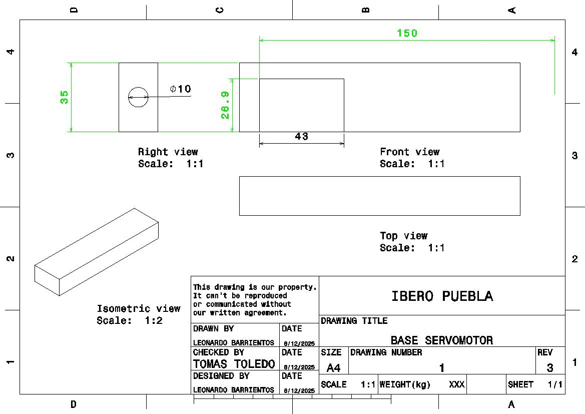
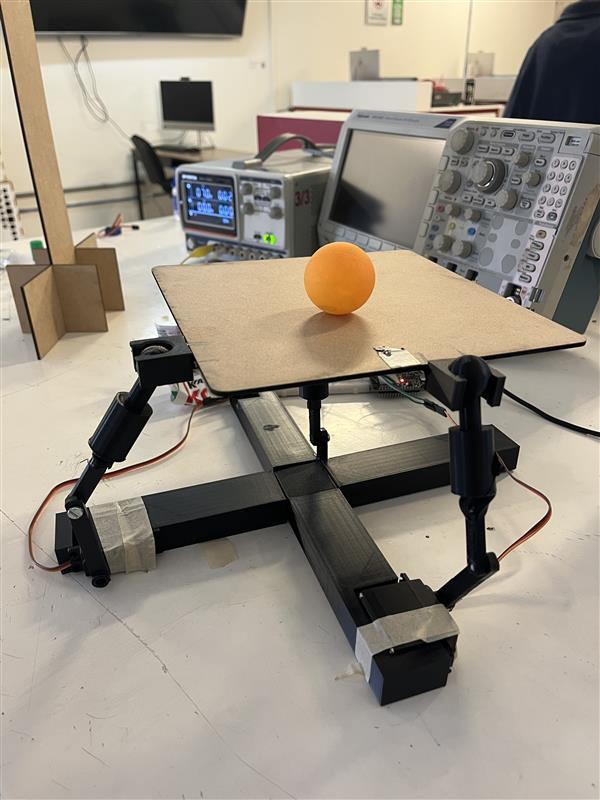

Proyecto Final
Nombre del proyecto: Ball and Plate system
Autores
- Barrientos Miguel Leonardo
- Zermeño Cervantes Rodrigo
Asignatura: Introducción a la Mecatronica
Fecha: 5 de Diciembre del 2025
Descripción
En este proyecto final desarrollamos un Ball and Plate System, un mecanismo mecatrónico capaz de mantener una pelota equilibrada sobre una plataforma mediante la variación de ángulos en una placa superior.
El sistema utiliza cuatro servomotores, los cuales modifican la inclinación de la placa en los ejes X y Y. A través del control coordinado de estos servomotores, la plataforma es capaz de moverse en diferentes direcciones para dirigir o estabilizar la pelota en una posición deseada.
Este mecanismo es una base importante para sistemas de control avanzados, como plataformas estabilizadoras, robots equilibristas o sistemas de visión con retroalimentación. El proyecto se encuentra documentado y versionado en GitHub, donde se registran los avances, diagramas y códigos implementados.
Objetivos
General
Diseñar y programar un sistema mecatrónico de control de inclinación capaz de mover una plataforma en dos ejes mediante servomotores para lograr el equilibrio dinámico de una pelota.
Especificos
- Implementar la comunicación y control de 4 servomotores utilizando un microcontrolador (Arduino/ESP32)..
- Diseñar la estructura mecánica para mover la placa superior mediante un sistema articulado.
- Desarrollar el código para mover la plataforma en diferentes direcciones variando los ángulos de los servos.
- Comprender la relación entre los movimientos de los servomotores y la inclinación resultante de la placa.
- Documentar el proceso mecánico, electrónico y de programación del sistema.
Alcance y Exclusiones
-Incluye:
- Montaje mecánico con una placa móvil y cuatro servos.
- Código para controlar la inclinación de la placa en ambos ejes.
- Pruebas manuales de inclinación mediante valores programados.
- Calibración básica del rango de movimiento de los servos.
-No Incluye:
Procedimiento
Diseño Mecánico Del Sistema
Se construyó una plataforma con dos niveles:
1- Placa inferior fija, donde se colocan los servomotores.
2- Placa superior móvil, unida mediante rótulas o uniones articuladas.
Cada uno de los dos servomotores está conectado a un punto distinto de la placa móvil. Al variar el ángulo de los servos, se altera la altura relativa de cada esquina de la plataforma, generando inclinación en dos ejes.
Tambien se incluye una webcam mediante la cual recibimos la imagen del de la parte superior de la plataforma donde es colocada la pelota. El objetivo de esto es que mediante la retroaliemtación visual recibida por parte de la webcam , el sistema pueda compensar perturbaciones y mantener la pelota en la plataforma sin que se caiga de esta.
Especificaciones:
-
Los servos que ocupamos fueron unos Servomotores Mg996r 15kg de 180º Y las siguentes medidas:
-Longitud del cable: 30cm, cable de señal (amarillo), rojo (alimentación), marrón (masa).
-Tamaño :40.7 * 19.7 * 42.9mm
-
Por otro lado la plataforma fue realizada con madera mdf de un grosor de 3 mm con un área de 20 * 20 cm.
-
Por ultimo, se realizo una base en forma de cruz para sostener los servos de forma horizontal, la cual cada parte tenia una longitud aproximada a 14 cm con un ancho de 3.5 cm y un alto de 2 cm, dejando en cada esquina un compartimento para el servo, con las medidas exactas de estos. Ademas de una parte central de 3.5 * 3.5 * 2cm la cual unia estas partes entre si mediante unos tubos los cuales tenian 1cm de diametro y los cuales extruimos 2 cm para que todo pudiese unirse y formar la base.

- Por otra parte, se procedió al diseño y fabricación de un par de brazos destinados a acoplarse a los servomotores. Esta configuración, al conectar los brazos a la plataforma y mantenerlos sujetos a los servos, permitió el correcto proceso de nivelación de la plataforma.

Programación del código
Por otro lado y probablemente la parte más importante para que funionara el mecanismo, es el codigo, el cual consistio en 2 partes, el codigo realizado en python mediante Visual Studio.
El código desarrollado en Visual Studio tiene como propósito realizar el procesamiento visual y el control principal del sistema Ball and Plate. Su función consiste en detectar en tiempo real la posición de una pelota sobre la plataforma y generar las señales de corrección necesarias para mantenerla en equilibrio.
Para lograr esto, el programa utiliza una cámara conectada al sistema para capturar video en vivo. Mediante técnicas de visión artificial (OpenCV), identifica la pelota a través de un filtrado por color en el espacio HSV y determina sus coordenadas dentro del cuadro de imagen. Una vez obtenida la posición, el algoritmo calcula el error respecto al centro de la plataforma y aplica un control del tipo PD (Proporcional–Derivativo) para generar una respuesta dinámica y estable.
El resultado de este cálculo se traduce en dos ángulos de inclinación (eje X y eje Y), los cuales se envían de manera continua al microcontrolador ESP32 mediante comunicación Bluetooth. Finalmente, estos valores serán interpretados por el sistema Arduino/ESP32 para ajustar los servomotores y así modificar la inclinación de la base física.
import cv2
import numpy as np
import bluetooth
import time
# = BLUETOOTH =
device_mac = "7C:9E:BD:70:0A:1E" # MISMA MAC DEL ESP32
port = 1
# =PARÁMETROS SERVOS (2 EJES) =
# SERVO_X controla inclinación eje X (izquierda/derecha)
# SERVO_Y controla inclinación eje Y (arriba/abajo)
NEUT_X = 180 # neutro a 180°
NEUT_Y = 180 # neutro a 180°
# MODO TEST (para exagerar el movimiento)
TEST_MODE = True # Cambia a False cuando ya quieras algo más fino
if TEST_MODE:
# Mucho más movimiento de servos
MAX_SERVO_OFFSET_X = 70.0 # rango de inclinación en X (grados)
MAX_SERVO_OFFSET_Y = 45.0 # rango de inclinación en Y (grados)
# Control más agresivo y SIN derivada (más fácil ver el sentido)
KpX = 2.0
KdX = 0.0
KpY = 2.0
KdY = 0.0
else:
# Valores más tranquilos para uso normal
MAX_SERVO_OFFSET_X = 50.0
MAX_SERVO_OFFSET_Y = 40.0
KpX = 0.8
KdX = 0.2
KpY = 0.8
KdY = 0.2
# = FLAGS DE ORIENTACIÓN (LOS VAS CAMBIANDO EN VIVO) =
INVERT_X = False # lo puedes cambiar con la tecla 'x'
INVERT_Y = False # lo puedes cambiar con la tecla 'y'
SWAP_AXES = False # si True, intercambia X<->Y (tecla 's')
alpha = 0.8 # filtro para derivada
MIN_DT_CMD = 0.015 # 15 ms (~66 Hz máx)
last_cmd_time = 0.0
last_time = time.time()
last_errx = 0.0
last_erry = 0.0
dxf = 0.0
dyf = 0.0
# Centro calibrado de la plataforma (en píxeles de la imagen)
centerX = None
centerY = None
# Última posición conocida de la pelota (para la tecla 'b')
last_ball_x = None
last_ball_y = None
# = CONEXIÓN BLUETOOTH =
sock = None
print("Intentando conectar al ESP32 por Bluetooth...", device_mac)
while True:
try:
sock = bluetooth.BluetoothSocket()
sock.settimeout(10)
sock.connect((device_mac, port))
print(" Conectado al ESP32!")
break
except Exception as e:
print("Error de conexión, reintentando:", e)
time.sleep(1)
# = ENVIAR NEUTRO INICIAL A 180° EN LOS 2 SERVOS =
try:
cmd_init = f"ANG:{NEUT_X},{NEUT_Y}\n"
sock.send(cmd_init.encode())
last_cmd_time = time.time()
print("Posición inicial 180° enviada:", cmd_init.strip())
except Exception as e:
print(" Error al enviar posición inicial:", e)
# = CÁMARA (LA QUE VE LA PLATAFORMA) =
# Cambia 1 a 0 si tu otra cámara es la que ve la plataforma
video = cv2.VideoCapture(1)
# =RANGO HSV PARA LA PELOTA (EJEMPLO: NARANJA) =
LOWER = np.array([10, 150, 120], np.uint8)
UPPER = np.array([25, 255, 255], np.uint8)
kernel = cv2.getStructuringElement(cv2.MORPH_ELLIPSE, (3, 3))
while True:
ok, frame = video.read()
if not ok:
break
# Si la cámara te da la imagen al revés y quieres voltearla:
# frame = cv2.flip(frame, 1)
h, w = frame.shape[:2]
# Si aún no hay centro calibrado, por defecto usa el centro de la imagen
if centerX is None or centerY is None:
centerX = w // 2
centerY = h // 2
now = time.time()
dt = now - last_time if now > last_time else 0.01
send_allowed = (now - last_cmd_time) >= MIN_DT_CMD
# --- Detección de pelota por color ---
hsv = cv2.cvtColor(frame, cv2.COLOR_BGR2HSV)
mask = cv2.inRange(hsv, LOWER, UPPER)
mask = cv2.erode(mask, kernel, iterations=2)
mask = cv2.dilate(mask, kernel, iterations=2)
contornos, _ = cv2.findContours(mask, cv2.RETR_EXTERNAL, cv2.CHAIN_APPROX_SIMPLE)
tiene_pelota = False
if len(contornos) > 0:
c = max(contornos, key=cv2.contourArea)
(x, y), radio = cv2.minEnclosingCircle(c)
if radio > 5: # umbral mínimo para ruido
tiene_pelota = True
x = int(x)
y = int(y)
radio = int(radio)
# Guardamos última posición de la pelota
last_ball_x = x
last_ball_y = y
# Dibujar pelota
cv2.circle(frame, (x, y), radio, (255, 0, 0), 2)
cv2.circle(frame, (x, y), 3, (255, 0, 0), -1)
# Dibujar líneas del centro calibrado
cx = int(centerX)
cy = int(centerY)
cv2.line(frame, (cx, 0), (cx, h), (0, 255, 255), 1)
cv2.line(frame, (0, cy), (w, cy), (0, 255, 255), 1)
cv2.circle(frame, (cx, cy), 5, (0, 255, 0), -1) # centro calibrado
# Errores normalizados respecto al centro calibrado
errx_img = (x - cx) / (w / 2) # derecha +, izquierda -
erry_img = (y - cy) / (h / 2) # abajo +, arriba -
# Posible intercambio de ejes
if SWAP_AXES:
errx_raw = erry_img
erry_raw = errx_img
else:
errx_raw = errx_img
erry_raw = erry_img
# Invertir si hace falta (lo cambias en vivo con 'x' y 'y')
if INVERT_X:
errx_raw = -errx_raw
if INVERT_Y:
erry_raw = -erry_raw
# Mostrar errores crudos para debug
cv2.putText(frame, f"Ex:{errx_raw:+.2f} Ey:{erry_raw:+.2f}",
(10, 25), cv2.FONT_HERSHEY_SIMPLEX, 0.6,
(255, 255, 255), 2)
# - Control PD -
derx = (errx_raw - last_errx) / dt
dery = (erry_raw - last_erry) / dt
dxf = alpha * dxf + (1 - alpha) * derx
dyf = alpha * dyf + (1 - alpha) * dery
uX = KpX * errx_raw + KdX * dxf
uY = KpY * erry_raw + KdY * dyf
# Limitamos uX, uY a [-1,1]
uX = float(np.clip(uX, -1.0, 1.0))
uY = float(np.clip(uY, -1.0, 1.0))
# Offset de servos en grados (cada servo controla un eje)
servo_off_X = uX * MAX_SERVO_OFFSET_X
servo_off_Y = uY * MAX_SERVO_OFFSET_Y
# Ángulos lógicos absolutos
ang_x = NEUT_X - servo_off_X # SERVO eje X
ang_y = NEUT_Y - servo_off_Y # SERVO eje Y
# Limitar a 0..180
ang_x = int(np.clip(ang_x, 0, 180))
ang_y = int(np.clip(ang_y, 0, 180))
cv2.putText(frame,
f"X:{ang_x} Y:{ang_y}",
(10, 50), cv2.FONT_HERSHEY_SIMPLEX, 0.6,
(0, 255, 255), 2)
# Enviar comando ANG: (2 servos: X,Y)
if send_allowed:
try:
cmd = f"ANG:{ang_x},{ang_y}\n"
sock.send(cmd.encode())
# print("CMD ->", cmd.strip())
last_cmd_time = now
except Exception as e:
print(" Error al enviar ANG:", e)
last_errx = errx_raw
last_erry = erry_raw
last_time = now
if not tiene_pelota:
cv2.putText(frame, "PELOTA NO DETECTADA", (10, 25),
cv2.FONT_HERSHEY_SIMPLEX, 0.7,
(0, 0, 255), 2)
# Si pierdes la pelota, manda NEUTROS → 180° en los 2 servos
if send_allowed:
try:
cmd_lost = f"ANG:{NEUT_X},{NEUT_Y}\n"
sock.send(cmd_lost.encode())
last_cmd_time = now
# print("CMD LOST-NEUTRO ->", cmd_lost.strip())
except Exception as e:
print(" Error al enviar NEUTRO (sin pelota):", e)
# Mostrar estado de flags
status = f"invX:{INVERT_X} invY:{INVERT_Y} swap:{SWAP_AXES} TEST:{TEST_MODE}"
cv2.putText(frame, status, (10, h - 10),
cv2.FONT_HERSHEY_SIMPLEX, 0.6, (0, 255, 0), 2)
cv2.imshow("Ball Balancing Control", frame)
cv2.imshow("Mascara", mask)
key = cv2.waitKey(1) & 0xFF
if key == ord('q'):
break
elif key == ord('c'):
# Tecla 'c' para centrar manualmente (180° en ambos)
try:
cmd_c = f"ANG:{NEUT_X},{NEUT_Y}\n"
sock.send(cmd_c.encode())
last_cmd_time = time.time()
print("Comando CENTRO 180° enviado.")
except Exception as e:
print(" Error al enviar CENTRO:", e)
elif key == ord('x'):
INVERT_X = not INVERT_X
print("INVERT_X ->", INVERT_X)
elif key == ord('y'):
INVERT_Y = not INVERT_Y
print("INVERT_Y ->", INVERT_Y)
elif key == ord('s'):
SWAP_AXES = not SWAP_AXES
print("SWAP_AXES ->", SWAP_AXES)
elif key == ord('b'):
# Calibrar centro con la pelota en el centro físico
if last_ball_x is not None and last_ball_y is not None:
centerX = last_ball_x
centerY = last_ball_y
print(f"Centro calibrado en ({centerX}, {centerY})")
video.release()
sock.close()
cv2.destroyAllWindows()
El código de Arduno implementado en el ESP32 tiene como propósito recibir, interpretar y ejecutar los comandos de control enviados desde el programa en Python, con el fin de mover los servomotores que inclinan la plataforma del sistema Ball and Plate. Su función principal es actuar como la interfaz física entre el algoritmo de control y el mecanismo real.
A través del módulo Bluetooth interno del ESP32, el microcontrolador recibe continuamente mensajes en el formato “ANG:x,y”, los cuales representan los ángulos lógicos de los servomotores para los ejes X y Y. Una vez recibido un comando, el programa lo analiza, lo valida y lo convierte en un ángulo físico real, tomando en cuenta la inversión mecánica de los servos para que los movimientos correspondan correctamente a las direcciones generadas por el controlador.
El sistema incorpora una rampa de movimiento suave, diseñada para evitar saltos bruscos que puedan generar vibraciones o inestabilidad en la plataforma. Esta rampa ajusta gradualmente la posición de los servos hasta alcanzar el ángulo objetivo, mejorando el desempeño dinámico y reduciendo el desgaste mecánico. Asimismo, el código implementa un mecanismo de seguridad que devuelve automáticamente los servos a su posición neutra si no se recibe ningún comando en un tiempo determinado.
#include <Arduino.h>
#include "BluetoothSerial.h"
BluetoothSerial SerialBT;
// Buffer para lectura BT no bloqueante
String btBuffer;
// Pines de los servos
// SERVO_X controla eje X
// SERVO_Y controla eje Y
#define SERVO_X 21
#define SERVO_Y 19
// PWM
const uint32_t FREQ_HZ = 50;
const uint8_t RES_BITS = 12;
const uint16_t DUTY_MIN = 205; // ~1.0 ms
const uint16_t DUTY_MAX = 410; // ~2.0 ms
// Convierte grados físicos 0..180 a duty
uint16_t dutyFromDeg(int deg){
deg = constrain(deg,0,180);
return map(deg,0,180,DUTY_MIN,DUTY_MAX);
}
// Convierte de ángulo lógico (0..180) a físico (invertido)
int logicalToPhysical(int logicalDeg){
logicalDeg = constrain(logicalDeg, 0, 180);
// 0 lógico -> 180 físico, 180 lógico → 0 físico
return 180 - logicalDeg;
}
// Escribe usando grados lógicos
void writeServoLogical(int pin, int logicalDeg){
int fisico = logicalToPhysical(logicalDeg);
ledcWrite(pin, dutyFromDeg(fisico));
}
// Configurar servo con ángulo lógico inicial
void configServo(int pin, int initialLogical){
pinMode(pin,OUTPUT);
ledcAttach(pin,FREQ_HZ,RES_BITS); // usa el pin como canal
writeServoLogical(pin,initialLogical);
}
// Rango y rampa
const int LIM_MIN = 0;
const int LIM_MAX = 180;
const int PASO_RAMPA = 45; // tamaño de paso en rampa
const uint32_t DT_RAMP_MS = 2;
const uint32_t TIMEOUT_MS = 700;
// Estado en grados LÓGICOS (arrancan en 180)
int posX = 180;
int posY = 180;
int tgtX = 180;
int tgtY = 180;
uint32_t tPrevRamp = 0;
uint32_t tLastCmd = 0;
// Rampa suave hacia el objetivo
void aplicarRampa(){
uint32_t now = millis();
if(now - tPrevRamp < DT_RAMP_MS) return;
tPrevRamp = now;
auto go = [&](int actual,int target){
if(actual < target) return min(actual + PASO_RAMPA, target);
if(actual > target) return max(actual - PASO_RAMPA, target);
return actual;
};
posX = go(posX, tgtX);
posY = go(posY, tgtY);
// Escribimos usando grados LÓGICOS, se invierten adentro
writeServoLogical(SERVO_X, posX);
writeServoLogical(SERVO_Y, posY);
}
// "ANG:x,y"
bool parseAngulos(const String &msg, int &aX, int &aY){
if (!msg.startsWith("ANG:")) return false;
String data = msg.substring(4); // después de "ANG:"
int c1 = data.indexOf(',');
if (c1 < 0) return false;
String sX = data.substring(0, c1);
String sY = data.substring(c1 + 1);
sX.trim();
sY.trim();
aX = sX.toInt();
aY = sY.toInt();
return true;
}
// SETUP
void setup(){
Serial.begin(115200);
SerialBT.begin("fina");
// Ambos servos arrancan en 180 lógico
configServo(SERVO_X, posX);
configServo(SERVO_Y, posY);
Serial.println("ESP32 listo (2 servos X/Y, neutro 180°)");
tLastCmd = millis();
}
// LOOP
void loop(){
// Lectura Bluetooth no bloqueante
while (SerialBT.available()) {
char c = (char)SerialBT.read();
if (c == '\n') {
// Tenemos una línea completa en btBuffer
String msg = btBuffer;
btBuffer = ""; // limpiar para el siguiente mensaje
msg.trim();
if (msg.length() > 0) {
tLastCmd = millis();
if (msg == "ZERO") {
// Todos a 0 lógico (180 físico por inversión)
tgtX = 0;
tgtY = 0;
Serial.println("Comando ZERO: X/Y → 0 lógico (180 físico)");
} else {
int aX, aY;
if (parseAngulos(msg, aX, aY)) {
tgtX = constrain(aX, LIM_MIN, LIM_MAX);
tgtY = constrain(aY, LIM_MIN, LIM_MAX);
Serial.printf("ANG -> X:%d Y:%d\n", tgtX, tgtY);
} else {
Serial.print("Comando desconocido: ");
Serial.println(msg);
}
}
}
} else if (c != '\r') {
// Acumulamos caracteres, ignorando CR
btBuffer += c;
}
}
// Si pasa mucho tiempo sin recibir comandos, vuelve al neutro 180
if(millis() - tLastCmd > TIMEOUT_MS){
tgtX = 180;
tgtY = 180;
}
aplicarRampa();
delay(1);
}
Funcionamiento de la base
La primera imagen presentada es la imagen de la camara siendo ejecutada y como captura la plataforma y la pelota en ella.
Mientas que la segunda imagen es la imagen de la plataforma completa junto con el circuito y la pelota en ella.

Y para finalizar, subimos a youtube un video con los resultados del mecanismo funionando correctamente.
Link: youtube.com/watch?si=ySMpmDCWlPXWW_h-&v=5i9Qri7ijuo&feature=youtu.be